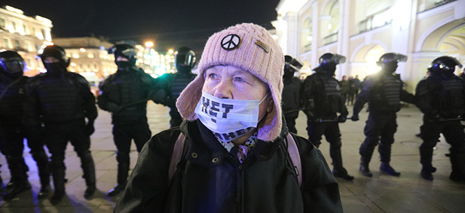

The Seeds Of War
Putin sees Russian statehood and Russian national and linguistic identity as inextricably connected, and he is willing to spill Russian and Ukrainian blood to protect this nationalist vision.

Nothing the U.S. left can do or say will change the course of the war in Ukraine, but it was still
embarrassing to find DSA’s International Committee obsessing over “NATO’s militarization” in the
lead up to the invasion. (A subsequent statement by the National Political Committee rightly
condemns the Russian invasion but implies that NATO expansionism “set the stage” for the conflict.)
There are excellent reasons to criticize NATO, and U.S. intervention abroad, both generally and in
this specific context—and, of course, our primary duty as socialists is to critique the actions of
our own government rather than provide left-wing versions of its own propaganda against hostile
states. But it is all too easy for this kind of reasoning to turn into a form of provincialism that
sees only the United States and its allies as primary actors; other countries, in this view, only
act in response to U.S. aggression and not for reasons of their own. This is what happened here.
The truth is, NATO has no more devoted accomplice than Vladimir Putin. No other traditional enemy of
U.S. imperialism has done more to validate the fever dreams of the most extreme hawks. Twenty years
ago the alliance was a Cold War relic whose relentless expansion at Russia’s expense was a
transparent U.S. attempt to cement unipolarity while its rivals were weak. More recently, it has
been riven by internal crises, from Turkish aggression in Syria and Armenia to Donald Trump’s clear
contempt for the organization. Yet each time Putin has escalated a political conflict into a
military one, or a local military conflict into a larger one, both leaders and citizens of NATO
states have been reminded that there are, after all, some benefits to living under the Article 5
umbrella. In Ukraine, only a small minority supported NATO accession a decade ago; today, after
years of Russian-instigated conflict and territorial losses, a clear majority does. Traditionally,
the alternative favored by NATO opponents has been “Finlandization,” in which smaller states agree
to a neutral role in great-power politics in exchange for guarantees of sovereignty and internal
noninterference. Thanks to Putin’s actions, this option is now evaporating: Finland itself now
supports hardline sanctions on Russia and has joined other European states in sending military
shipments to Ukraine.
So if Putin’s principal motivation is to resist uncompromising NATO expansionism, why has he behaved
in a way that guarantees that his neighbors will see him as a growing security threat? His own
speeches and writings offer an answer to this question. For Putin, resisting NATO is in fact
secondary to the larger goal of reuniting Russians, Belarusians, and Ukrainians under Russian
rule—or, failing that, at least ensuring that Russian speakers across the former Soviet Union are
either in a secure alliance bloc with Russia (as in the case of Belarus and Kazakhstan, which have
significant Russian-speaking populations) or are governed by it directly. Putin sees Russian
statehood and Russian national and linguistic identity as inextricably connected, and he is willing
to spill Russian and Ukrainian blood to protect this nationalist vision. He also seems to believe
that the clock is ticking—younger generations of people in the post-Soviet world are less likely to
see the region’s political boundaries as a problem in need of fixing. Hence the desperate, fatal
urgency of Putin’s moves in 2013–14 and again in 2022.
This explains Putin’s particular vitriol toward Ukraine—not just its pro-Western government, but to
the nature of Ukrainian statehood itself, which he sees as being artificially constructed by Lenin
during the 1920s. Putin does not deny the existence of a Ukrainian national identity or movement
prior to the Revolution; instead, what he objects to is the Soviet predilection for attaching
primarily Russian-speaking regions like Crimea, the Donbass, and Kharkiv to a republic he sees as
vulnerable to control by nationalist Ukrainians who reject Russia’s imperial reach.
Putin describes his objectives in Ukraine as “demilitarization and denazification,” but the
practical implications of this remain unclear. An essay by the columnist Petr Akopov published
briefly on the website of the official news agency, RIA Novosti, and then immediately
retracted—having apparently been drafted in anticipation of a quick victory—gives some insight into
what those goals might entail. The question of national security, it argues, is only of “secondary
significance.” More significant is resolving the “complex of a divided people, the complex of
national humiliation” by reuniting Russia with Ukraine. If Putin had not taken decisive action, it
argues, “returning Ukraine” would have become more difficult with each passing decade. The essay
shows that Russia will not be content with a few annexations in the Donbass—the goal is to
“reconstruct, reestablish, and return [Ukraine] to its natural condition as a part of the Russian
world.” Though the essay claims that “this will not mean the liquidation of its statehood,” this
formula clearly implies the creation of a loyal satellite in Ukraine against the wishes of its
population. Far from preventing a new Cold War, such a move would guarantee it.
The current Russian invasion has much in common with the 2020 war between Armenia and Azerbaijan.
Both conflicts derive indirectly from Bolshevik policy on nationalities, which sought to give
nondominant nationalities nested structures for local self-governance and cultural autonomy while
ensuring political cohesion through firm Communist Party rule. When the party began to weaken, these
political structures created space for nationalist elites to take power and engage in violent
conflicts. In former Yugoslavia, a similar set of policies collapsed into a rapid and catastrophic
civil war as the socialist state unraveled. The former Soviet Union seemed to have done better,
despite smaller conflicts in places like Abkhazia and Nagorno-Karabakh in the 1990s (the latter of
which formed the first round of the 2020 war). Yet, as we are discovering, the seeds of war may
prove more long-lasting than anyone initially thought, especially when they are fertilized by
nationalist revanchism.
Like other post-Soviet states, Ukraine has certainly engaged in nationalist posturing both
internally and externally. Neo-Nazi groups, while not influential in the government apparatus, have
often been able to operate with impunity or with the tacit encouragement of some government
officials. Yet to draw an equivalence or to see a possible justification here would be profoundly
mistaken. Despite Putin’s unsubstantiated claims of ethnic cleansing or “genocide” in the Donbass,
Russia has consistently driven the violent escalation of conflict, beginning in 2013–14 when Russian
agents like Igor Girkin helped convert protests in the Donbass against the newly established Maidan
regime into a militarized insurgency supported directly by Russian forces. Both sides have since
shown a willingness to violate ceasefire agreements and target civilian populations, but Ukraine
ultimately seeks a restoration of the status quo ante; only Russia has larger imperial goals in
mind, precluding a genuine peace. As for the neo-Nazis, the ongoing struggle has given them
resources and legitimacy they would never have otherwise had—and despite their neo-Stalinist
paraphernalia, many of the Russian-speaking nationalists Russia supports in the Donbass are just as
right-wing as their counterparts from the Azov Battalion. This is not the Second World War, and more
war cannot and will not curb the process of nationalist radicalization.
In this context a genuine socialist internationalism has an important role to play. In solidarity
with ordinary Russians, we should oppose sanctions, which do nothing to help Ukrainians. These fall
into three categories: sanctions on Putin personally, on Russia’s oligarchic and business elite, and
on the economic system more broadly. The first are ineffective, because despite his vast wealth
Putin is not primarily motivated by material gain. The second are mistargeted, because the Russian
economic elite no longer functions as a source of pressure on the regime—indeed, the sanctions of
2013–14 helped Putin make that elite more compliant and loyal by disrupting its foreign connections.
Broad economic sanctions like cutting Russia off from SWIFT and freezing central bank assets are the
worst, because they lead to hyperinflation and shortages of key imports that millions of vulnerable
Russians depend on. Putin has already anticipated the likely effects of all three types of sanctions
and therefore will not be deterred by them; neither have sanctions ever worked to catalyze effective
political opposition to the regime (or to other regimes targeted by Western sanctions). Despite
these failures, sanctions are being imposed because they help cover up the West’s actual inability
to help Ukraine in any meaningful way by appearing to satisfy a longing for retribution.
Yet NATO military action (which does not seem to be on the table for the moment) would be even
worse, leading the world directly to global thermonuclear war. Those in the West who sympathize with
the plight of Ukraine have no choice but to trust in Ukrainian and Russian resistance to Putin’s
war. Thousands of Russians have already been arrested for protesting against the war, a number that
is sure to grow significantly as the war expands. Millions of Ukrainians don’t want to die in
bombings, live under imperial rule, or be forced into emigration; millions of Russians don’t want to
be immiserated by sanctions or be conscripted into an invasion that gains them nothing. In our
response to the war, we should be careful not to simply echo Russia’s nationalist elites—they think
blaming NATO will shift attention away from their increasingly repressive, kleptocratic, and
militarist rule at home. Our loyalties must lie with the people of both Ukraine and Russia, and with
the cause of peace.